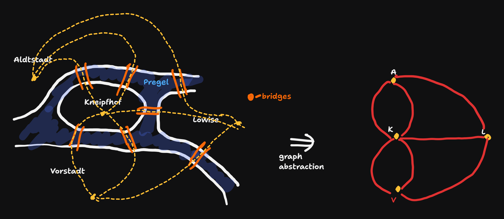
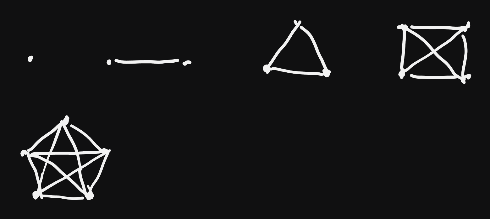
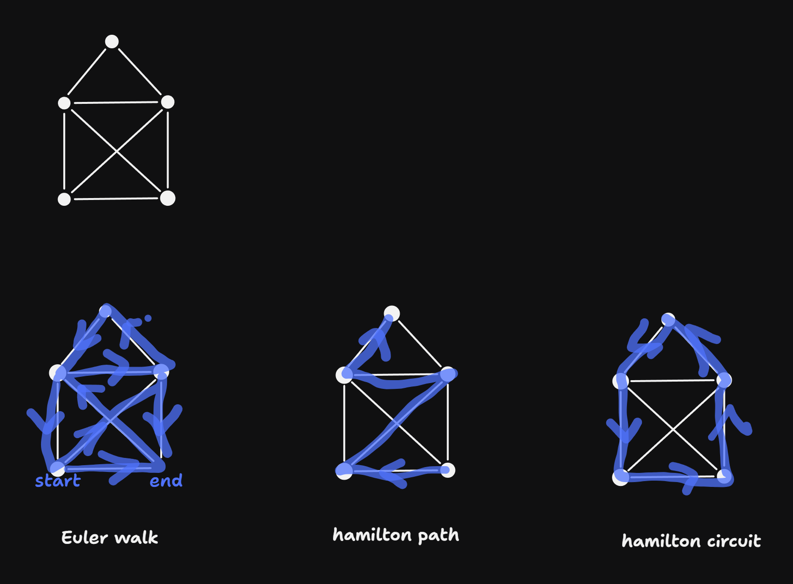
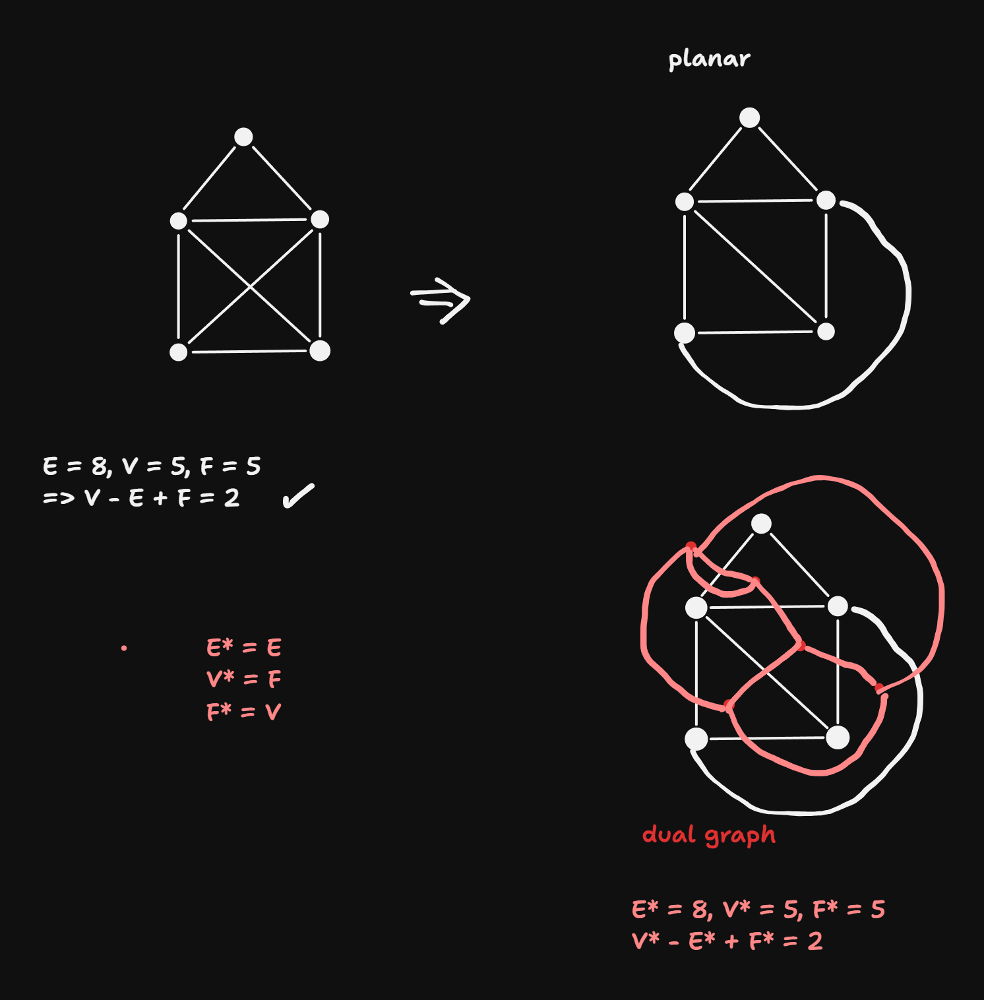

Week 11
VL 20 - 23.06.25
- revision of previous lecture: definition of a heap
for the heap tree and als its subtrees: root has the highest priority (max heap) \(\Rightarrow\) parent has higher priority than its children
the heap tree is perfectly balanced & left-leaning \(\Rightarrow\) flattening as Array is possible
for any node k
- parent: (k - 1) // 2
- left child: 2 * k + 1
- right child 2 * k + 2
insert operation:
- append new elements at the end of the array (O(1))
- whenever necessary repair the heap-condition with
upheap()after inserting
implementation
class Heap: def __init__(self): self.data = [] def push(self, priority): self.data.apipend(priority) upheap(self.data, len(self.data) - 1) def upheap(a, k): while True: if k == 0: # repair has ended break parent = (k - 1) // 2 if a[parent] > a[k]: # heap-cond holds break a[parent], a[k] = a[k], a[parent] # swap k = parentHeap Data Structure (Cont)
- deleting an element:
- deleting the largest element (the first element):
- replace last element (the smallest) with the first element (the largest) and delete the last element. (now the first element is violating the heap cond because it is the smallest)
- repair the heap condition starting from the root, successively pushing node down
number of comparisons O(d) = O(logN)def pop(self): last = len(self.data) - 1 self.data[0] = self[last] del self.data[last] downheap(self.data, last - 1) def downheap(a, last): k = 0 # while True: left, right = 2 * k + 1, 2 * k + 2 if left > last: # repair has ended, because k is a leaf break if right <= last and a[right] > a[left]: child = right else: child = left if a[k] > a[child]: break # heap cond holds a[k], a[child] = a[child], a[k] # swap k = child
Heapsort - Sorting with the Heap Techniques
the idea is to first create a heap from the array
implementation:
def heap_sort(a):
N = len(a)
for k in range(1, N):
upheap(a, k)
# a is sorted a a sa heap
for k in range(N - 1, 0, - 1): # loop iteration backwards
a[0], a[k] = a[k], a[0] # bring the currently largest element to the position k
downheap(a, k - 1) # repair the heap condition in the remaining heap Treap Data Structure
Treap is a simultaneously both
- a search tree
- a heap
implementation:
class TreapNode:
def __init__(self, key, priority, value):
self.key = key
self.value = value
self.priority = priority
self.left = self.right = None- idea:
- The tree satisfies the search tree condition w.r.t the key
- The tree satisfies the heap condition w.r.t. the priority
- The inventor of the Treap DS showed that it is possible and feasible to satisfies both conditions at the same time
- e.g. insert:
- normal
tree_insertw.r.t thekey(priority is ignored) \(\Rightarrow\) search tree condition is satisfied - repair the heap condition on the way back of the recursive call stack, if the current node has lower priority than its child (important: the heap-condition can be only violated w.r.t to one of the children, namely in the subtree in which it was inserted)
- if the left child has higher priority \(\Rightarrow\) right-rotation
- if the right child has higher priority \(\Rightarrow\) left-rotation
- normal
- e.g. insert:
- possible appropriate priorities:
- random numbers \(\Rightarrow\) the tree is balanced on average
- access counter \(\Rightarrow\) rotate the element upwards if more often access than the parent (access optimized tree, i.e. important elements are closer to the root - and this is faster.)
Index Sort / Indirect Sort
given:
a- an unsorted arrayp- array, where the indices are stored in a sorted order.p[i] -> k(index). k is the index of an element before the sorting, s.t.iis the index after the sorting. (pis a permutation of the numbers 0, …, N - 1)applications:
- iff a read-only, in-place is not possible
- if multiple arrays have to be sorted in the same way (?)
implementation
def index_sort(a, p): r = [None] * len(a) for i in range(len(a)): r[i] = a[p[i]] return rpcan be obtained by any sorting algorithm, where the key-functoin accesses the original Arraya = [...] # read-only array, to be sorted p = list(range(len(a))) # indices 0, ..., N - 1 quick_sort(p, key_function = lambda k: a[k]) r = index_sort(a, p)
VL 21 - 26.06.25
Graphs & Graph Theory
Origins of graph theory: Solution to the Kongisberg Problem:
- is it possible to make a city tour without crossing any bridge ever twice?
Euler’s answer: No.

Solution: An Euler path exist only if all nodes (other than start and end nodes) have an even number edges incident to them (i.e. the degree of the nodes is even)
Definitions for Graphs:
- Graph G = (V, E)
- V: set of all nodes / vertices
- E: Set of all edges, \(E \subseteq V \times V\)
- V: set of all nodes / vertices
- This is a normal graph: at most one edge between any two nodes. Initially we also exclude self loops, i.e. \((u, u) \notin E\)
- Multigraph: multiple edges between nodes are allowed (Like in the Konigsberg example)
- undirected graph: \((v, u) \in E \Rightarrow (u, v) \in E\)
- directed graph: not undirected.
- Degree of a node:
- undirected: number of edges incident to a node (we don’t count twice)
- directed:
- out degree: number of outgoing edges
- in degree: numb of inocming edges
- Complete Graph:

Let \(N := |V|, M := |E|\). For a complete graph we have:
\(degree(u) = N - 1\)
handshaking lemma: \(M = \frac{N(N - 1)}{2}\)
Subgraph: \(G' = (V', E'), V' \subseteq V, E' \subseteq E\) and \((u, v) \in E' \Rightarrow V'\)
- induced subgraph: for an arbitrary \(V' \subseteq V\), \(E' := E \\ \{(u, v) : u \notin V' \text{or} v \notin V'\}\)
- spanning subtree: \(V' = V, E' \subset E\)
Walks (Weg) in graphs:
- trivial walk of length 0: individual node
- walk of length 1: a single edge of a graph
- a generalized walk of a graph: a sequence of nodes \((v_1, v_2, ... v_k)\), s.t. \((v_i, v_{i + 1}) \in E, \forall i\) \(\Rightarrow\) length:= \(k - 1\)
Path: A Walk where each individual node is distinct (other than possibly start and end)
Cycle (Zyklus): a Walk with \(v_1 = v_k\)
Circuit (sometimes Cycle) (Kreis): a path with \(v_1 = v_k\)
Reachability (Erreichbarkeit): \(u \rightsquigarrow v \Leftrightarrow u \rightsquigarrow v :\Leftrightarrow\) there is a Walk between the nodes \(u, v\)
Euler walk: each edge is contained exactly once. (example: Haus of Niklaus)
Hamilton path: each node is contained eactly once
Hamilton Circuit: A Hamilton path, s.t. start = end.
- This definition is relevant to the problem of the “Traveling Salesman”: find the hamilton circuit with the least weight (for graphs with weighted edges). Best known algorithm is \(\mathcal{O}(2^N)\).
- This is the standard example of a “NP-hard problem” \(\Rightarrow\) no efficient algorithm is known.

- weighted graphs:
- node-weighted: a number (weight) is assigned to every node
- edge-weighted: a number (weight) is assigned to every edge
- or both
- example: a graph of streets: edge weights = length of the roads
- Planar Graphs:
- a planar graph can be drawn in 2D, s.t. no edges intersect.
- ex.: Haus of Niklaus
- euler’s formula for any planar graph drawn without crossings: \(V - E + F = 2\)
- Dual Graphs:
- each surface gets a node
- each edge defines a border between surfaces - each surface seperated by an edge is connected with an edge 
Euler’s Formula (Primal Form)
For any connected planar graph drawn without edge crossings:
\[ V - E + F = 2 \]
Where:
- \(V\) = number of vertices
- \(E\) = number of edges
- \(F\) = number of faces, including the outer (infinite) face
Dual Graphs and Euler’s Formula
The dual graph \(G^*\) of a planar graph \(G\) is constructed by:
- Placing a vertex in each face of \(G\)
- Connecting two vertices in \(G^*\) if their corresponding faces in \(G\) are adjacent (i.e., separated by an edge in \(G\))
In the dual:
- The number of vertices in \(G^*\) is equal to the number of faces in \(G\): \(V^* = F\)
- The number of edges remains the same: \(E^* = E\)
- The number of faces in \(G^*\) equals the number of vertices in \(G\): \(F^* = V\)
Euler’s Formula Applied to the Dual
Since the dual \(G^*\) is also planar and connected (if \(G\) is), Euler’s formula also holds:
\[ V^* - E^* + F^* = 2 \]
Substituting the dual identities:
\[ F - E + V = 2 \]
This shows that Euler’s formula is preserved under duality, with \(V \leftrightarrow F\), and \(E\) unchanged.
Summary Table
| Property | Original Graph \(G\) | Dual Graph \(G^*\) |
|---|---|---|
| Vertices | \(V\) | \(V^* = F\) |
| Edges | \(E\) | \(E^* = E\) |
| Faces | \(F\) | \(F^* = V\) |
| Euler’s Formula | \(V - E + F = 2\) | \(V^* - E^* + F^* = 2\) |
Connected Graph
any two nodes \(u, v\) are connected \(u \rightsquigarrow v\).
- connected components: maximal subgraphs of the graph that are connected.
- tree: connected graph, s.t. no cucles exist
- for a tree: \(|E| = |V| - 1\)
- forest: a not connected graph, s.t. each connected component is a tree
- spanning tree: a subgraph of a connected graph that is a tree, s.t. all nodes are touched.
- \(\Rightarrow\) theorem: for a connected graph such a spanning tree always exists.
Trees Code
bintree
from collections import deque
def ls(a, key):
for i in range(len(a)):
if a[i] == key: return i
return None # key not found
def bs(a, key):
def bs_inner(a, l, r):
if l >= r: return None
m = (l + r) // 2
if key == a[m]: return m
if key < a[m]: return bs_inner(a, l, m)
return bs_inner(a, m+1, r)
return bs_inner(a, 0, len(a))
def bs_iter(a, key):
i, j = 0, len(a)
# invariant: key possibly in a[i:j]
m = (i + j) // 2
while i < j:
if key == a[m]: return m
if key < a[m]:
j = m
m = (i + j) // 2
else:
i = m + 1
m = (i + j) // 2
return None
class Node:
def __init__(self, key, value = None):
self.key = key
self.value = value # if no value provided, keys are considered values
self.left = self.right = None # node initially a leaf
def __str__(self):
return f"({str(self.key)}: {str(self.value)})"
__repr__ = __str__
class BinTree:
def __init__(self):
self.root = None # binary tree initially empty
def insert(self, key, value = None): # if no value provided, default to None, keys are values
self.root = self._insert(self.root, key, value)
def _insert(self, node, key, value):
if node is None:
return Node(key, value)
if key == node.key:
node.value = value
return node
if key < node.key:
node.left = self._insert(node.left, key, value)
else:
node.right = self._insert(node.right, key, value)
return node
def _predecessor(self, node):
node = node.left
while node.right is not None:
node = node.right
return node
def _remove(self, node, key):
"""Return to caller up the stack the modified tree, where
the node with key is removed"""
if node is None: # tree empty. return empty tree
return None
if key < node.key: # recurse to left sub-tree
node.left = self._remove(node.left, key)
return node
elif key > node.key: # recurse to right sub-tree
node.right = self._remove(node.right, key)
return node
# key == node.key
if node.right is None and node.left is None: # node is a leaf
return None
if node.right is None:
return node.left
if node.left is None:
return node.right
pred = self._predecessor(node)
node.key, node.value = pred.key, pred.value
node.left = self._remove(node.left, pred.key)
return node
def remove(self, key):
self.root = self._remove(self.root, key)
def _search(self, node, key):
if node is None: return None
if key == node.key: return node
if key < node.key: return self._search(node.left, key)
return self._search(node.right, key)
def search(self, key):
return self._search(self.root, key)
# Manual attach helpers
def add_root(self, key, value = None):
if self.root is not None:
raise ValueError("Root already exists")
self.root = Node(key, value)
return self.root
def attach_left(self, node, key, value = None):
if node.left is not None:
raise ValueError("Left child already present")
node.left = Node(key, value)
return node.left
def attach_right(self, node, key, value = None):
if node.right is not None:
raise ValueError("right child already present")
node.right = Node(key, value)
return node.right
# validation of the tree
def validate_bst(self):
def dfs(n, lo, hi):
if n is None:
return True
if (lo is not None and lo >= n.key) or \
(hi is not None and hi < n.key):
return False
return dfs(n.left, lo, n.key) and dfs(n.right, n.key, hi)
return dfs(self.root, None, None)
# rotation operations
def _rotate_right(self, node):
if node is None or node.left is None: # nothing to rotate
return node
new_root = node.left
node.left = new_root.right
new_root.right = node
return new_root
def _rotate_left(self, node):
if node is None or node.right is None: # nothing to rotate
return node
new_root = node.right
node.right = new_root.left
new_root.left = node
return new_root
def rotate_right(self):
self.root = self._rotate_right(self.root)
def rotate_left(self):
self.root = self._rotate_left(self.root)
def _copy(self, n):
if n is None:
return None
m = Node(n.key, n.value)
m.left = self._copy(n.left)
m.right = self._copy(n.right)
return m
def copy(self):
t = BinTree()
t.root = self._copy(self.root)
return t
# understand bfs later
def copy_bfs(self):
if not self.root:
return BinTree()
t = BinTree()
t.root = Node(self.root.key, self.root.value)
q = deque([(self.root, t.root)])
while q:
old, new = q.popleft()
if old.left:
new_val = old.left.value
new.left = Node(old.left.key, new_val)
q.append((old.left, new.left))
if old.right:
new_val = old.right.value
new.right = Node(old.right.key, new_val)
q.append((old.right, new.right))
return t
def max(self):
def _max(n):
if n is None: return None
while n.right is not None:
n = n.right
return n
return _max(self.root)
def min(self):
def _min(n):
if n is None: return None
while n.left is not None:
n = n.left
return n
return _min(self.root)
def to_sorted_list(self):
l = []
def dfs(node):
if node is None: return
dfs(node.left)
l.append(node.key)
dfs(node.right)
dfs(self.root)
return l
def inorder(self):
def gen(node):
if node is not None:
yield from gen(node.left)
yield node.key
yield from gen(node.right)
return gen(self.root)
def __iter__(self):
yield from self.inorder()
def _str_rotated(self, node, level=0):
if node is None: return ""
s = self._str_rotated(node.right, level + 1)
s += " " * level + str(node.key) + "\n"
s += self._str_rotated(node.left, level + 1)
return s
def to_string_preorder(self):
"""Preorder (root, left, right), with indentation showing depth"""
lines = []
def dfs(n, depth):
if not n: return
lines.append(" " * depth + str(n.key))
dfs(n.left, depth + 1)
dfs(n.right, depth + 1)
dfs(self.root, 0)
return "\n".join(lines)
def __str__(self):
return self._str_rotated(self.root)
__repr__ = __str__
@classmethod
def from_list(cls, items):
t = cls()
for it in items:
if isinstance(it, tuple) and len(it) == 2:
k, v= it
t.insert(k, v)
else: t.insert(it)
return t
def print_tree_rotated(node, level=0):
if node is not None:
print_tree_rotated(node.right, level + 1)
print(" " * level + str(node.key))
print_tree_rotated(node.left, level + 1)
def tree_insert(node, key, value=None):
# inserts (key, value) and returns the tree
# 1) Empty tree? Create a new node and return it. This will be root of the of the caller
if node is None: return Node(key, value)
# 2) Key already present? Update the value in-place,
if node.key == key:
node.value = value
return node
# 3) recursive steps
if key < node.key:
node.left = tree_insert(node.left, key, value)
else:
node.right = tree_insert(node.right, key, value)
return nodeAnderson Tree
from bintree import BinTree, Node
from collections import deque
class AANode(Node):
def __init__(self, key, value=None, level=1):
super().__init__(key, value)
self.level = level # leaf level = 1
class AnderssonTree(BinTree):
# --- utilities ---
@staticmethod
def _level(n):
return 0 if n is None else getattr(n, "level", 1)
def _make_node(self, key, value=None):
return AANode(key, value, level=1)
# --- AA primitives: skew & split ---
def _skew(self, x):
"""Fix a left horizontal link: if level(left) == level(x), rotate right."""
if x and x.left and self._level(x.left) == self._level(x):
x = self._rotate_right(x)
return x
def _split(self, x):
"""
Fix two consecutive right horizontal links:
if level(right.right) == level(x), rotate left and bump level of new root.
"""
if x and x.right and x.right.right and self._level(x.right.right) == self._level(x):
x = self._rotate_left(x)
x.level += 1
return x
# --- insert (BST insert + AA fixes bottom-up) ---
def insert(self, key, value=None):
self.root = self._insert(self.root, key, value)
def _insert(self, n, key, value=None):
if n is None:
return self._make_node(key, value)
if key == n.key:
n.value = value # update
return n
if key < n.key:
n.left = self._insert(n.left, key, value)
else:
n.right = self._insert(n.right, key, value)
n = self._skew(n)
n = self._split(n)
return n
# --- delete (BST delete + AA level fixes + skew/split passes) ---
def remove(self, key):
self.root = self._remove(self.root, key)
def _remove(self, x, key):
if x is None:
return None
if key < x.key:
x.left = self._remove(x.left, key)
elif key > x.key:
x.right = self._remove(x.right, key)
else:
# delete this node
if x.left is None:
return x.right
if x.right is None:
return x.left
# replace with predecessor (max of left)
pred = x.left
while pred.right:
pred = pred.right
x.key, x.value = pred.key, pred.value
x.left = self._remove(x.left, pred.key)
# --- AA delete fix: possibly lower level, then skew/split passes ---
x = self._decrease_level_if_needed(x)
x = self._skew(x)
if x and x.right:
x.right = self._skew(x.right)
if x.right and x.right.right:
x.right.right = self._skew(x.right.right)
x = self._split(x)
if x and x.right:
x.right = self._split(x.right)
return x
def _decrease_level_if_needed(self, x):
"""After deletion, if a child level is too small, lower x’s level and clamp right child’s level."""
if x is None:
return None
expected = min(self._level(x.left), self._level(x.right)) + 1
if x.level > expected:
x.level = expected
if x.right and self._level(x.right) > expected:
x.right.level = expected
return x
# --- override node-creation sites that must preserve AA nodes ---
def _copy(self, n):
if n is None:
return None
m = AANode(n.key, n.value, getattr(n, "level", 1))
m.left = self._copy(n.left)
m.right = self._copy(n.right)
return m
def copy(self):
t = AnderssonTree()
t.root = self._copy(self.root)
return t
@classmethod
def from_list(cls, items):
t = cls()
for it in items:
if isinstance(it, tuple) and len(it) == 2:
k, v = it
t.insert(k, v)
else:
t.insert(it)
return t
# --- AA validator (optional but very helpful) ---
def validate_aa(self):
def ok(x):
if x is None:
return True, 0 # True, level=0
# BST property reused from parent class if you like; we do local checks here:
ll = self._level(x.left)
lr = self._level(x.right)
# invariant: no left horizontal link; right link is horizontal or down by one
if ll != x.level - 1:
return False, 0
if not (lr == x.level or lr == x.level - 1):
return False, 0
# no two consecutive right horizontals
if x.right and x.right.right and self._level(x.right.right) == x.level:
return False, 0
# recursive check
vl, _ = ok(x.left)
if not vl:
return False, 0
vr, _ = ok(x.right)
if not vr:
return False, 0
return True, x.level
good, _ = ok(self.root)
# also ensure BST order (reuse your validate_bst):
return good and self.validate_bst()Heap
class MaxHeap:
"""Simple binary max-heap (0-based array)"""
def __init__(self, items=None):
self._A = []
if items:
self.build_from_list(items)
def __len__(self):
return len(self._A)
def peek(self):
if not self._A:
raise IndexError("peek from empty heap")
return self._A[0]
def push(self, value):
"""append value and sift up"""
self._A.append(value)
self._sift_up(len(self._A) - 1)
def pop(self):
"""Remove and return max (root)"""
if not self._A:
raise IndexError("pop from empty heap")
root = self._A[0]
last = self._A.pop()
if self._A:
self._A[0] = last
self._sift_down(0)
return root
def build_from_list(self, items):
"""Floyd's build-heap in O(n)"""
self._A = list(items)
n = len(self._A)
# all nodes with children are indices < n // 2
for i in range(n // 2 - 1, -1, -1):
self._sift_down(i)
# --- internal helpers ---
def _sift_up(self, i):
A = self._A
v = A[i]
while i > 0:
p = (i - 1) // 2
if A[p] >= A[i]:
break
A[p], A[i] = A[i], A[p]
i = p
@staticmethod
def _sift_down_range(A, i, heap_size):
"""Sift-down on raw list A up to heap_size (exclusive)
This is the reusable array-based sifting routine
"""
while True:
left = 2 * i + 1
right = left + 1
if left >= heap_size:
break
larger = left
if right < heap_size and A[right] > A[left]:
larger = right
if A[i] >= A[larger]:
break
A[i], A[larger] = A[larger], A[i]
i = larger
def _sift_down(self, i):
# instance wrapper that reuses the static helper
self._sift_down_range(self._A, i, len(self._A))
# def _sift_down(self, i):
# A = self._A
# n = len(A)
# while True:
# left = 2 * i + 1
# right = left + 1
# if left >= n: # leaf node
# break
# larger = left
# if right < n and A[right] > A[left]: # right child exists and is larger
# larger = right
# if A[i] >= A[larger]: # heap condition satisfied
# break
# A[i], A[larger] = A[larger], A[i]
# i = larger
def __str__(self):
return str(self._A)
__repr__ = __str__
# --- heapsort as a namespaced "free" function ---
@classmethod
def heapsort(cls, seq, in_place=True, reverse=False):
"""
Heapsort implemented using the class's sifting routine.
- if in_place is True (default) the input list is sorted in place and returned
- if in_place is False, a new list is returned and input not mutated
- reverse=False -> ascending output
"""
if in_place:
A = seq
else:
A = list(seq)
n = len(A)
# build max-heap (heapify)
for i in range(n // 2 - 1, -1, -1):
cls._sift_down_range(A, i, n)
# extract max repeadedly: place it at the end ans shrink heap
for end in range(n-1, 0, -1):
A[0], A[end] = A[end], A[0]
cls._sift_down_range(A, 0, end)
if reverse:
A.reverse()
return A